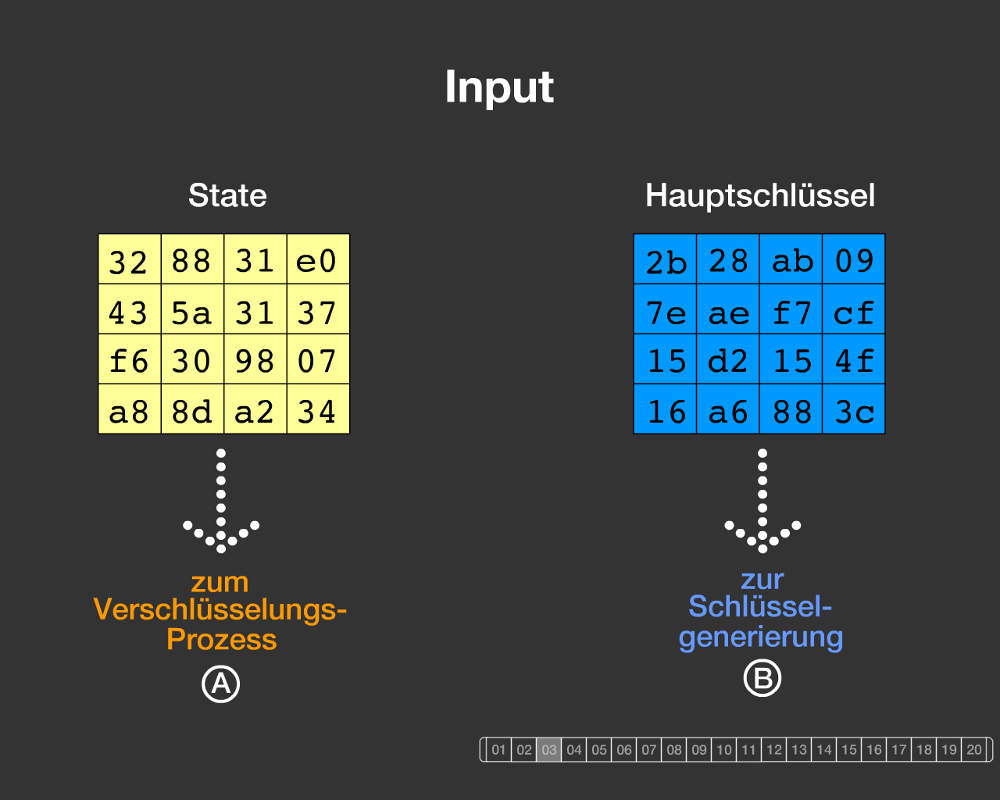
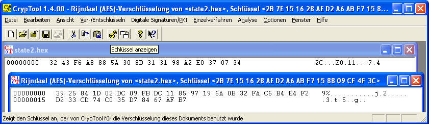

Dieses Flash-Programm visualisiert die Details des AES-Algorithmus für einen fest gewählten Datensatz. Im Gegensatz dazu können Sie mit dem Rijndael-Inspector die Daten frei wählen.
AES ist der aktuelle Standard moderner symmetrischer Verschlüsselungsverfahren.
Der AES ist ein standardisierter Spezialfall des Rijndael-Verschlüsselungsverfahren, das mit variabler Blocklänge für die Daten (insbesondere 128 Bit) und mit variabler Schlüssellänge (128, 192 und 256 Bit) arbeitet.
In der Visualisierung von Enrique Zabala wird das AES-Verfahren mit der Animationssoftware Flash demonstriert. Dabei werden fest vorgegebene Daten verwendet. Sowohl die Klartextnachricht (in der Spezifikation "state" genannt) als auch der benutzte Hauptschlüssel haben eine Länge von jeweils 128 Bit ( = 16 Byte).
Die Animation zeigt dann schrittweise die Weiterverarbeitung: sowohl den eigentlichen, auf den Datenblock angewandten Verschlüsselungsprozess, als auch den Prozess der Generierung der Teilschlüssel aus dem Hauptschlüssel.

Bemerkung 1: Spezifikation
Die Daten des visualisierten Beispiels stammen direkt aus der offiziellen AES-Spezifikation des NIST: "Federal Information Processing Standards Publication 197, November 26, 2001, Announcing the ADVANCED ENCRYPTION STANDARD (AES)" (http://nvlpubs.nist.gov/nistpubs/FIPS/NIST.FIPS.197.pdf), Anhang B.
Eine ebenfalls sehr gute Darstellung findet sich in Kapitel 11, Seite 20 von http://www.techheap.com/cryptography/encryption/spec.v36.pdf (A Specification for Rijndael, the AES Algorithm, Dr. Brian Gladman, v3.6, 15th April 2003).
Die Testdaten aus der Spezifikation lauten:
Input = 32 43 f6 a8 88 5a 30 8d 31 31 98 a2 e0 37 07 34
Cipher key = 2b 7e 15 16 28 ae d2 a6 ab f7 15 88 09 cf 4f 3c
a) Input = State = Klartextblock von 16 Bytes:
3243f6a8885a308d313198a2e0370734
Dieser Input ist auch in der mit ausgelieferten Hex-Datei "state2.hex" abgespeichert.
Die Inputdaten werden initial spaltenweise (!) in die Matrix geschrieben:
32 88 31 e0
43 5a 31 37
f6 30 98 07
a8 8d a2 34
b) Cipher key (Hauptschlüssel):
2b7e151628aed2a6abf7158809cf4f3c
Der Schlüssel wird ebenfalls spaltenweise (!) in eine 4-zeilige Matrix geschrieben:
2b 28 ab 09
7e ae f7 cf
15 d2 15 4f
16 a6 88 3c
c) Output = Geheimtextblock:
Als Output erhält man wieder 16 Bytes, dargestellt in einer Matrix:
39 02 dc 19
25 dc 11 6a
84 09 85 0b
1d fb 97 32
Geschrieben in einer Datei im Hexformat ergibt dies:
39 25 84 1d 02 dc 09 fb dc 11 85 97 19 6a 0b 32

Bemerkung 2: Spaltenweises Einlesen
Sowohl die gegebenen Daten wie auch der Hauptschlüssel werden gemäß Standard spaltenweise in eine 4*4 Byte-Matrix eingelesen (16 Byte = 128 Bit).
Wenn man sich die Flash-Animation ansieht und die Beispieldaten mit der implementierten AES-Funktionalität unter dem normalen Menüeintrag Rijndael (AES) nachvollziehen will, muss man die Matrixdaten in der Visualisierung spaltenweise auslesen und in eine Zeile schreiben (dadurch erhält man die ursprünglichen Beispieldaten aus der Spezifikation wie in Bemerkung 1 beschrieben).
Bemerkung 3: OpenSSL
Zum Vergleich: Mit dem folgenden OpenSSL-Befehl wird das Chiffrat in die Datei "state2-enc.hex" geschrieben:
openssl enc -aes-128-ecb -in state2.hex -out state2-enc.hex -iv 0 -K 2b7e151628aed2a6abf7158809cf4f3c
Bemerkung 4: Padding
Gibt man das 16 Byte lange Input-Beispiel aus der Spezifikation (siehe Bemerkung 1) in CrypTool oder OpenSSL ein, erhält man einen doppelt so langen Output (32 statt 16 Byte). Dies liegt daran, dass der Input in diesen Implementierungen immer mit 128 Bit gepadded wird.
Die ersten 16 Byte (der erste Outputblock = der eigentliche Geheimtextblock) sind bei OpenSSL und CrypTool identisch, und stimmen jeweils mit der Animation (bzw. der Spezifikation) überein.
Der zweite Block, das verschlüsselte Padding, ist unterschiedlich: Das liegt daran, dass CrypTool und OpenSSL ein unterschiedliches Padding verwenden. Das Padding ist im Standard nicht spezifiziert. In der Animation wird kein Padding durchgeführt.
Beispiel-Output von CrypTool:
39 25 84 1d 02 dc 09 fb dc 11 85 97 19 6a 0b 32
fa c6 b4 e4 f2 d2 33 cd 74 c0 35 d7 84 67 af b7
Beispiel-Output mit OpenSSL:
39 25 84 1d 02 dc 09 fb dc 11 85 97 19 6a 0b 32
a2 54 be 88 e0 37 dd d9 d7 9f b6 41 1c 3f 9d f8
OpenSSL erzeugt bei festem Key (2b7e151628aed2a6abf7158809cf4f3c) bei jedem beliebigen Klartext immer die gleiche zweite Zeile (a2 54 be 88 e0 37 dd d9 d7 9f b6 41 1c 3f 9d f8).
CrypTool padded den Klartext mit einer anderen Folge (binär 10000000000000...) und hat deshalb eine andere zweite Zeile.
Bemerkung 5: Beispieldateien
Die beiden Dateien "state2.hex" (Klartext) und "state2-enc.hex" (Chiffrat) sind zum einfacheren Nachvollziehen dem CrypTool-Paket beigelegt.